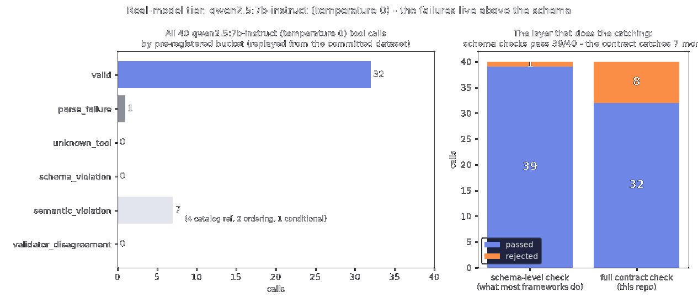

Sole developerJul to Aug 2026complete, oracle agreement asserted in CI
Tool calls that look right and silently aren't
LLMs emit structured tool calls that mostly parse, type-check, and validate, and still break the contract. This is my navigation shield's architecture applied to tool calls: a deterministic two-layer validator, an independent oracle, and the finding that the failures live above the schema.
Try the validator
Both layers, running here on the committed responses. Pick a task and a model and the text is the model's reply exactly as recorded; the validator classifies it as you read. Then edit the call: rename the tool, break the schema, point it at a waypoint that does not exist, and watch which layer catches it. The 40 tasks and the eight-tool catalog are the repository's own.
It opens on task 28, "Pick up the green cylinder", with qwen's reply. The call parses, names a real tool and satisfies its schema, so a schema check would pass it. The contract layer does not: there is no green cylinder in the object catalog.
- 1. Parse
- 2. Structural: a real tool, and its JSON Schema
- 3. Semantic: the contract beside the tool
The two layers
The structural layer (does the call parse, name a real tool, satisfy its JSON Schema?) is a standard-library checker with zero runtime dependencies, differentially tested against the mature jsonschema package, pinned exactly. On every structural verdict, every committed and fuzzed case, both checkers run and must agree; a disagreement is a bug in one of them, reported and never smoothed over. The tests assert the oracle's sharp edges by name: bool is not a number, 1.0 is a valid integer, True is not a member of enum [1].
The semantic layer carries the contract rules a schema does not: referential integrity against live catalogs, mutually exclusive parameters, parameters required together or in order, conditionals. It is declared as data beside each tool, and it is where the real failures concentrated.
The results

The headline is the right panel: a schema-level check, which is what most agent frameworks do, passes 39 of 40 of this model's calls. The contract passes 32. Everything substantive lived above the schema, which is the thesis of the repository, demonstrated on committed data.
The detail252 words, about 1 min
The result held on a second model. The same forty tasks put to llama-3.3-70b-versatile (temperature 0, hosted), a model with ten times the parameters, produced zero schema violations and five contract violations: the same three failure families as the 7B model (nonexistent entities transcribed faithfully, a delivery scheduled to end before it starts, a zone rule with no zone). A schema-level check again passes 39 of 40. One detail: both models' single parse failure is the same task. Asked to rotate a camera no tool controls, qwen emitted an empty object and llama wrote a prose refusal naming the missing capability. Neither invented a tool.
The boundary, with committed examples: the model also silently substituted impossible requests into contract-valid calls: "warehouse 3" became an existing waypoint, "5 m/s" became 0.5, "turn the robot off" became a status report. Those land in valid, because they satisfy the contract. Whether a call matches the user's intent is a task-appropriateness axis this validator pre-declared as a non-goal. Those cases are why the axes exist separately, and why merging them into one "valid" score would misreport both.
Behind these results: a 262-case constructed tier with every label confirmed by the oracle before it counts, dataset regeneration diff-checked in CI, and the 25,000-pair seeded differential, deterministic on purpose because an asserted count must not drift. These are facts about two models, a 7B and a 70B, each at one temperature on the same n=40, reported per model and never averaged, worded that way everywhere.